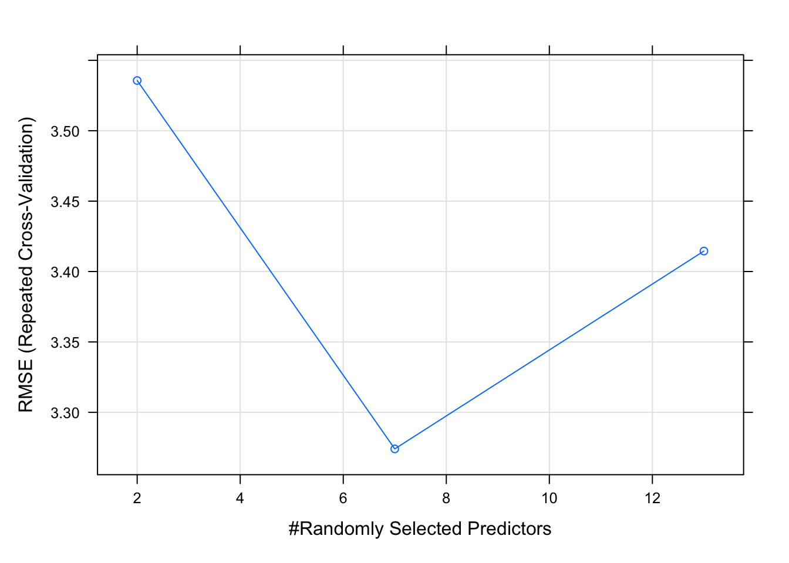
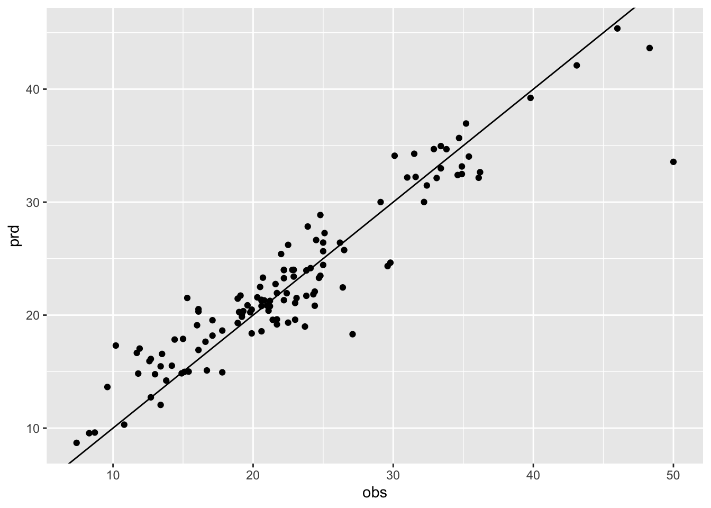
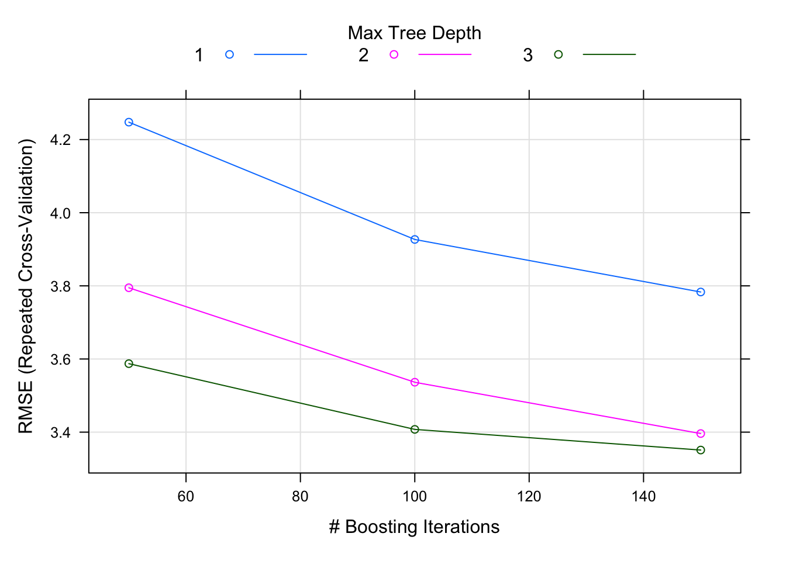
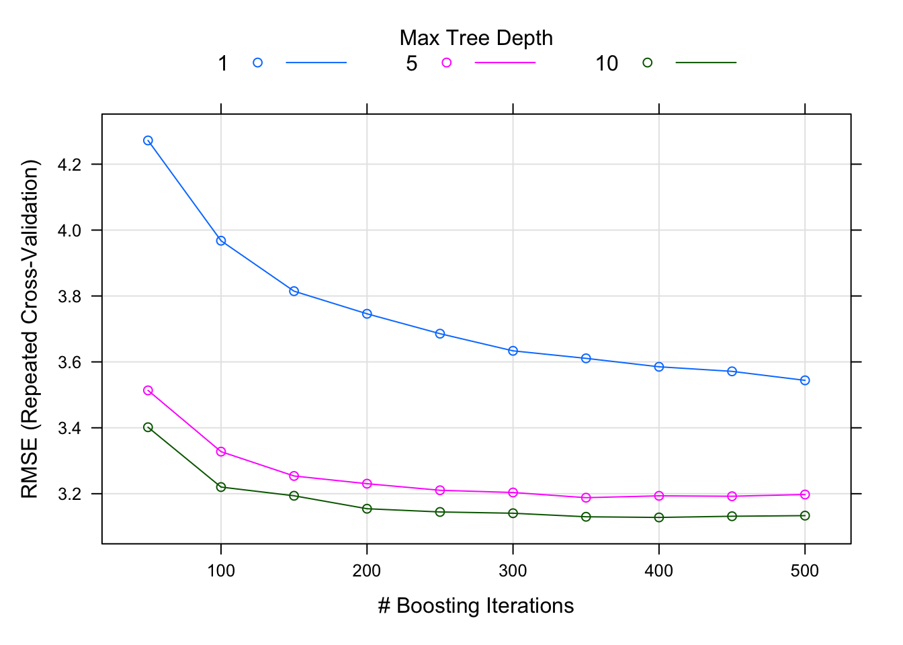
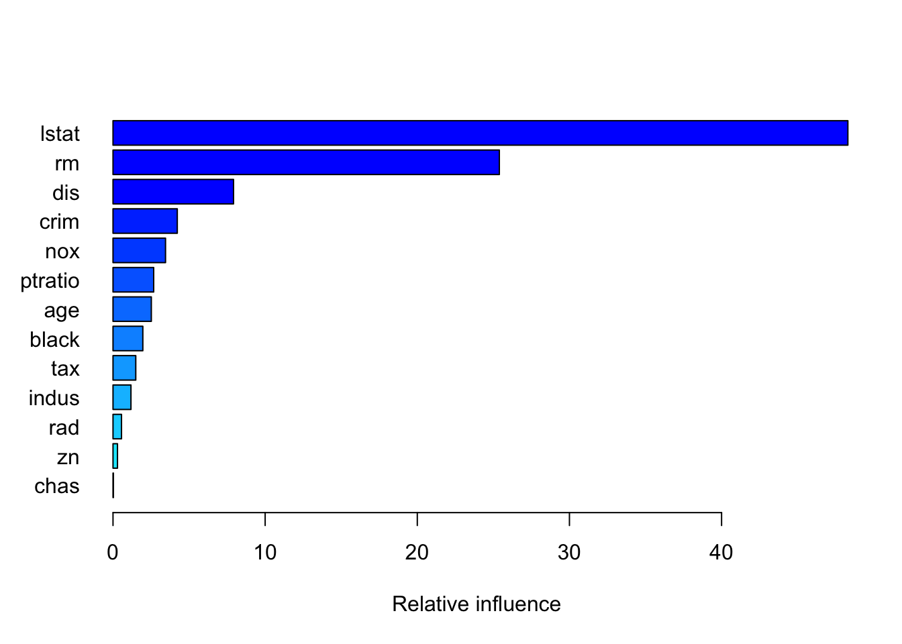
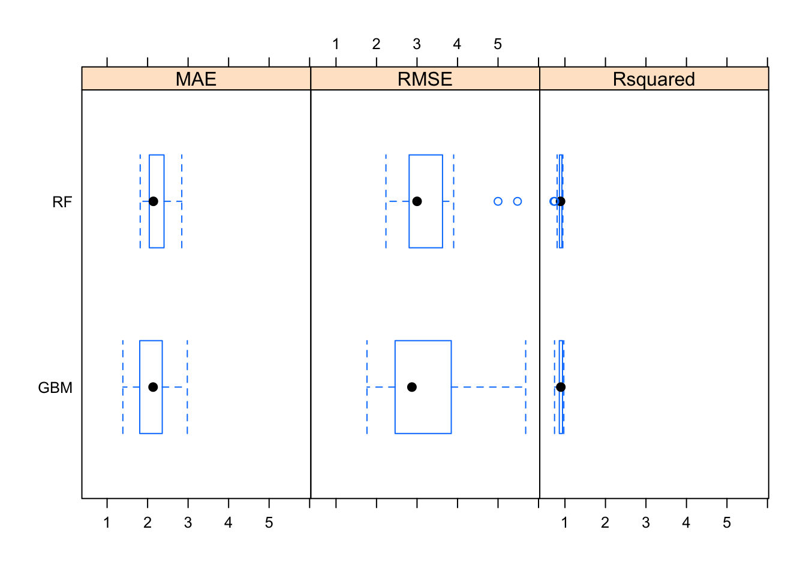

Decision tree, Random forest & Gradient boosting
Hong, Yoon-Ho
2022-09-10
의사결정나무
의사결정나무(decision tree) 알고리즘은 기본적으로 설명변수 공간을 다수의 영역으로 분할하는 방법입니다. 해당 관측치가 속하는 영역의 훈련 관측치들의 평균 (회귀 문제에서) 또는 최빈값 (분류 문제에서)을 사용하여 예측합니다.
<메이저리그 타자의 연봉을 예측하는 문제>


회귀 문제에서는 아래 식으로 주어진 RSS 를 최소로 하는 셜명변수 공간을 찾는 것이 목적입니다.
\[\sum_{j=1}^J\sum_{i\in R_j}(y_i - \hat{y}_{R_j})^2\]
Rj: jth 설명변수 공간
\(\hat{y}_{R_j}\): jth 설명변수 공간에
속한 훈련 관측치 반응변수들의 평균값
그러나, 설명변수 공간을 J개로 분할하는 모든 가능한 경우를 고려하는 것은 계산상 실현이 불가능하므로, top-down 방식의 반복적인 이분 분할 전략을 이용합니다(recursive binary splitting)

위 전략은 다음 두 가지 단점이 있습니다(drawbacks)
- 탐욕적이고 근시안적임(greedy, short-sighted)
- 과적합에 취약(prone to overfitting)
탐욕적이라는 것은 무슨 뜻일까요?
예를 들어, 5만원짜리 지폐, 3만원짜리 지폐, 5천원짜리 지폐가 있다고 해봅시다.
가장 적은 수의 지폐를 사용하여 6만원을 만들어야 한다고 해보죠.
정답은?
Top-down 방식의 탐욕적 알고리즘은 어떤 답을 내놓을까요?
가지치기
의사결정나무의 단점에 대한 해결방안으로 가지치기(pruning) 전략이 있습니다.
의사결정나무(tree) 빌딩 초기에 쓸모 없어 보이는 분할 이후에 아주 좋은 분할이 올 수 있습니다. 따라서, 더 나은 전략은 아주 큰 트리를 만든 다음에 그것을 다시 가지치기(prune)하여 subtree를 얻는 것입니다.그러나, 이렇게 모든 가능한 subtree에 대해 교차 검증(혹은 검증셋 기법)을 이용하여 검정 오차율를 추청하는 것은 너무 번거롭습니다. 대신, 우리는 고려할 작은 subtree 집합을 다음에 소개할 알고리즘으로 선택하고자 합니다.
cost complexity pruning (weakest link pruning)
모든 가능한 subtree 를 고려하는 대신에 tuning parameter \(\alpha\) (>=0) 에 의해 색인된 일련의
tree 들을 고려.
각 \(\alpha\) 값에 대해, 아래 식이 최소가 되는 subtree T 를 구할 수 있다.
\[\sum_{j=1}^J\sum_{i\in R_j}(y_i - \hat{y}_{R_j})^2 + \alpha T\]
T: subtree T의 number of terminal nodes
\(\alpha\): tuning parameter
\(\alpha = 0\)일때,subtree T=\(T_0\)
\(\alpha\)가 증가함에 따라 많은 터미널
노드가 있는 트리의경우 \(\alpha T\)
항이 크게 증가할 것이므로 트리가 작을 때 위 식의 값이 최소로 되는 경향이
있습니다.
즉, tuning parameter \(\alpha\) 는 서브트리의 복잡도와 훈련자료에 대한 적합 사이의 trade-off 를 제어합니다.
k-fold CV 을 이용해서 검정오차를 \(\alpha\)의함수로평가하고,평균 검정오차를최소로하는 \(\alpha\)를 선택합니다.

Linear model vs. Tree-based model

분류 오차
분류 문제에서 의사결정나무는 아래의 분류 오류율(E)을 최소로 하는 것이 목적입니다.
\[E = 1 - \max(\hat{p}_{mk})\] \(\hat{p}_{mk}\): m번째 설명변수 공간 내 k class에 속하는 관측치들의 비율
이분 분할(binary split) 과정에서 위 식의 분류 오류율을 사용할 수 있지만, 실제로는 node purity에 더 민감한 아래 두 가지 척도를 주로 사용합니다.
- 지니 지수(Gini index)
- 교차엔트로피(cross-entropy)
Gini index
\[G = \sum_{k=1}^{K}
\hat{p}_{mk}(1-\hat{p}_{mk})\]
Cross-entropy
\[D = - \sum_{k=1}^{K}
\hat{p}_{mk}log(\hat{p}_{mk})\]
Bagging
배깅(bagging)은 bootstrap aggregation으로도 알려져 있고, 기계학습모델의 분산을 줄여 예측 정확도를 증가시키기 위한 범용 절차(general-purpose procedure)입니다.
\[\hat{f}_{bag}(x) = \frac{1}{B}\sum_{b=1}^{B}\hat{f}_b(x)\] 회귀 에서는 평균값을(average for regression), 분류에서는 다수 모델의 예측치에 따라 결정됩니다(majority rule for classification)

배깅에 사용되지 않은 관측치들을 Out-of-bag (OOB) 관측치라고 합니다.
OOB 오차란 i번째 관측치에 대해 그 관측치가 OOB 이었던 각각의 트리를 이용하여 검정 오차를 추정할 수 있습니다. 교차검증 또는 검증셋 기법을 수행하기 힘든 규모가 큰 데이터셋에 대해 특히 편리합니다.
Variable importance 주어진 설명변수에 대한 분할로 인한 검정 오차(RSS or Gini index/Cross entropy)의 감소분을 모든(B개) 트리에 대해 평균합니다. 이 값이 크면 해당 설명변수가 중요하다고 할 수 있습니다.
랜덤 포레스트(Random Forest)
참고 자료
배깅에서와 마찬가지로 bootstrap에 의해 다수의 트리를 만드는 것은 동일합니다. 그러나, 배깅과 달리 트리 내에서 split이 고려될 때마다 p개 설명변수들의 전체 집합에서 랜덤하게 m개 설명변수가 선택됩니다(\(m = \sqrt{p}\), rule of thumb)
위와 같이 설명 변수 공간을 임의로 줄이는 것은 트리들 간의 상관성을 낮추어 결국 분산을 감소시키는 방법입니다.

실습: RF
보스턴 주택가격 데이터셋
library(MASS)
?Bostonmedv: median value of owner-occupied homes in $1K
library(caret)
library(dplyr)
library(ggplot2)set.seed(1)
train_index = createDataPartition(1:nrow(Boston), p=0.75, list = FALSE)
train_boston = Boston[train_index,]
test_boston = Boston[-train_index,]set resampling method
trctrl = trainControl(method = "repeatedcv", number = 10, repeats = 2)tunegrid = expand.grid(.mtry = c(2,7,13))build model by using training data
rf_model = train(medv ~ ., data = train_boston, method = "rf", trControl = trctrl, tuneGrid = tunegrid, importance = TRUE)
rf_model## Random Forest
##
## 382 samples
## 13 predictor
##
## No pre-processing
## Resampling: Cross-Validated (10 fold, repeated 2 times)
## Summary of sample sizes: 344, 345, 343, 343, 344, 344, ...
## Resampling results across tuning parameters:
##
## mtry RMSE Rsquared MAE
## 2 3.535638 0.8794782 2.438138
## 7 3.274050 0.8821079 2.245771
## 13 3.414543 0.8682930 2.328727
##
## RMSE was used to select the optimal model using the smallest value.
## The final value used for the model was mtry = 7.random forest 모델의 두가지 tuning parameter는 ntree와 mtry입니다.
ntree는 tree의 개수를 말하고, default 값은 500입니다.
mtry는 매 split마다 무작위로 선택되는 변수의 개수입니다. tuneGrid(지정한 mtry 값으로) 혹은 tuneLength(무작위로)를 이용해 정해줍니다.
plot(rf_model)
test set 에서의 성능
pred = predict(rf_model, newdata = test_boston)
df = data.frame(prd = pred, obs =test_boston$medv)
df %>%
ggplot(aes(obs, prd)) +
geom_point() +
geom_abline(intercept = 0, slope = 1)
sqrt(mean((pred - test_boston$medv)^2))## [1] 2.908614rf_imp = varImp(rf_model, scale = F)
plot(rf_imp)
부스팅(Boosting)
여러개의 decision tree 를 만들어 결합하는 것은 배깅과 동일합니다. 그러나, 배깅과 달리 bootstrap 샘플링을 하지 않고, 대신 모든 훈련셋 자료를 이용하여 순차적으로 천천히 학습합니다.
회귀 문제에서의 알고리즘
\(\hat{f}(x)=0\)이라하고,훈련셋의 모든 i에대해 \(r_i = y_i\) 로 설정한다. (r: residuals)
b = 1,2,…,B 에 대하여 다음을 반복한다.
d개의 분할(d+1 터미널 노드)을 가진 트리 \(\hat{f}^b\)를 훈련자료 (X,r)에 적합한다.
새로운 트리의 수축 버전을 더하여 \(\hat{f}(x)\) 를 업데이트한다.
\[\hat{f}(x) \leftarrow \hat{f}(x) + \lambda \hat{f}^b(x)\]
- 잔차들을 업데이트한다.
\[r_i \leftarrow r_i - \lambda \hat{f}^b(x_i)\]
- 부스팅 모델을 출력한다.
\[\hat{f}(x) = \sum_{b=1}^B \lambda \hat{f}^b(x)\]
Boosting 의 tuning parameters
- B: number of trees
- \(\lambda\): 수축 파라미터 (학습
속도를 제어)
- d: number of split in each tree (boosting의 복잡도를 제어)

실습: GBM
Boston 데이터셋에서 실습을 해봅시다.
set.seed(9)
gbm_model = train(medv~., data = train_boston, trControl = trctrl, method = "gbm", verbose = F) # gradient boosting machine gbm_model## Stochastic Gradient Boosting
##
## 382 samples
## 13 predictor
##
## No pre-processing
## Resampling: Cross-Validated (10 fold, repeated 2 times)
## Summary of sample sizes: 346, 344, 342, 342, 345, 343, ...
## Resampling results across tuning parameters:
##
## interaction.depth n.trees RMSE Rsquared MAE
## 1 50 4.247584 0.8007864 2.977374
## 1 100 3.926869 0.8262090 2.742294
## 1 150 3.783172 0.8380866 2.657258
## 2 50 3.794828 0.8363081 2.695033
## 2 100 3.536513 0.8570699 2.510464
## 2 150 3.396137 0.8692006 2.430731
## 3 50 3.587275 0.8538374 2.497789
## 3 100 3.407543 0.8675589 2.384323
## 3 150 3.351050 0.8724060 2.351484
##
## Tuning parameter 'shrinkage' was held constant at a value of 0.1
##
## Tuning parameter 'n.minobsinnode' was held constant at a value of 10
## RMSE was used to select the optimal model using the smallest value.
## The final values used for the model were n.trees = 150, interaction.depth =
## 3, shrinkage = 0.1 and n.minobsinnode = 10.plot(gbm_model)
gbmGrid <- expand.grid(interaction.depth = c(1,5,10), n.trees = c(50*(1:10)), shrinkage = 0.1, n.minobsinnode = 10)gbm_model = train(medv~., data = train_boston, trControl = trctrl, method = "gbm", tuneGrid = gbmGrid, verbose = F) # gradient boosting machine gbm_model## Stochastic Gradient Boosting
##
## 382 samples
## 13 predictor
##
## No pre-processing
## Resampling: Cross-Validated (10 fold, repeated 2 times)
## Summary of sample sizes: 344, 343, 344, 344, 345, 344, ...
## Resampling results across tuning parameters:
##
## interaction.depth n.trees RMSE Rsquared MAE
## 1 50 4.272009 0.8043800 3.023046
## 1 100 3.967701 0.8280995 2.780211
## 1 150 3.814630 0.8405777 2.676617
## 1 200 3.745968 0.8461298 2.651081
## 1 250 3.685634 0.8517873 2.632449
## 1 300 3.633569 0.8558753 2.606267
## 1 350 3.610795 0.8576115 2.598718
## 1 400 3.585159 0.8596692 2.609834
## 1 450 3.571315 0.8617680 2.594121
## 1 500 3.544019 0.8638616 2.586708
## 5 50 3.513608 0.8632121 2.404211
## 5 100 3.327700 0.8773976 2.303103
## 5 150 3.253846 0.8819957 2.255191
## 5 200 3.230400 0.8833972 2.233041
## 5 250 3.210435 0.8845112 2.223303
## 5 300 3.203701 0.8848963 2.210434
## 5 350 3.187955 0.8855681 2.196203
## 5 400 3.193574 0.8850286 2.198415
## 5 450 3.192302 0.8850336 2.193614
## 5 500 3.197555 0.8845974 2.195310
## 10 50 3.401725 0.8718930 2.258571
## 10 100 3.220207 0.8844562 2.155694
## 10 150 3.193744 0.8863081 2.149944
## 10 200 3.154453 0.8890847 2.129045
## 10 250 3.144653 0.8897584 2.126596
## 10 300 3.140780 0.8897445 2.122873
## 10 350 3.130025 0.8903199 2.117722
## 10 400 3.128015 0.8902333 2.114623
## 10 450 3.131599 0.8900092 2.118969
## 10 500 3.133477 0.8897547 2.121861
##
## Tuning parameter 'shrinkage' was held constant at a value of 0.1
##
## Tuning parameter 'n.minobsinnode' was held constant at a value of 10
## RMSE was used to select the optimal model using the smallest value.
## The final values used for the model were n.trees = 400, interaction.depth =
## 10, shrinkage = 0.1 and n.minobsinnode = 10.plot(gbm_model)
summary(gbm_model, las = 1)
## var rel.inf
## lstat lstat 48.30117390
## rm rm 25.39286411
## dis dis 7.92139019
## crim crim 4.22479186
## nox nox 3.45187519
## ptratio ptratio 2.67358713
## age age 2.51868297
## black black 1.96016223
## tax tax 1.49649865
## indus indus 1.17947312
## rad rad 0.55834341
## zn zn 0.29398557
## chas chas 0.02717168gbm_pred = predict(gbm_model, newdata = test_boston)
sqrt(mean(gbm_pred - test_boston$medv)^2)## [1] 0.2113814resamps = resamples(list(RF = rf_model,
GBM = gbm_model))
resamps##
## Call:
## resamples.default(x = list(RF = rf_model, GBM = gbm_model))
##
## Models: RF, GBM
## Number of resamples: 20
## Performance metrics: MAE, RMSE, Rsquared
## Time estimates for: everything, final model fitsummary(resamps)##
## Call:
## summary.resamples(object = resamps)
##
## Models: RF, GBM
## Number of resamples: 20
##
## MAE
## Min. 1st Qu. Median Mean 3rd Qu. Max. NA's
## RF 1.817414 2.044993 2.142592 2.245771 2.399982 2.843888 0
## GBM 1.389045 1.850496 2.135562 2.114623 2.359493 2.980546 0
##
## RMSE
## Min. 1st Qu. Median Mean 3rd Qu. Max. NA's
## RF 2.232549 2.808442 3.001310 3.274050 3.613557 5.480696 0
## GBM 1.763994 2.512573 2.873849 3.128015 3.784773 5.682615 0
##
## Rsquared
## Min. 1st Qu. Median Mean 3rd Qu. Max. NA's
## RF 0.7247324 0.8648384 0.8908405 0.8821079 0.9231209 0.9482653 0
## GBM 0.7428865 0.8724682 0.8982811 0.8902333 0.9384065 0.9720575 0bwplot(resamps)